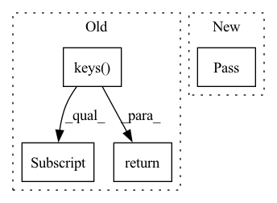

Pattern ID :16161

Before Change
top_n = self.field_index.search(encoded_query,top_n)
ids = top_n[1].tolist()[0]
distances = top_n[0].tolist()[0]
fnames = list(self.papers.keys())
similar_papers_fnames= list(np.unique(fnames)[ids])
reported_texts = [self.papers[fn]["reported"] for fn in similar_papers_fnames]
if text:
return " ".join(reported_texts)
else:
results = [(dist, report) for dist, report in zip(distances, reported_texts)]
return results
After Change
return (similar_papers_fnames,distances)
def review(self,query, top_n=4,text=True):
pass
// reported_texts = [self.papers[fn]["reported"] for fn in similar_papers_fnames]
// if text:
// return " ".join(reported_texts)
In pattern: SUPERPATTERN
Frequency: 3
Non-data size: 4
Instances
Fragment ID: 54068449
Project Name: yassinekdi/naimai
Commit Name: 734cd5b7a3d0a94887d140b72dd13dea5bf927d5
Time: 2022-06-13
Author: keptsa@yahoo.fr
File Name: pipelines/querier.py
M Class Name: Querier
N Class Name: Querier
M Method Name: review(4)
N Method Name: review(4)
M Parent Class:
N Parent Class:
M File Name: pipelines/querier.py
N File Name: pipelines/querier.py
M Start Line: 33
M End Line: 48
N Start Line: 50
N End Line: 50
'>
Before Change
self.lon = xr_data["lon"].to_numpy()
def __getitem__(self, index):
np_data = np.concatenate([self.data_dict[var][index] for var in self.data_dict.keys()], axis=0)
return torch.from_numpy(np_data)
def __len__(self):
return self.data_dict[list(self.data_dict.keys())[0]].shape[0]
After Change
self.lon = xr_data["lon"].to_numpy()
def __getitem__(self, index):
pass
def __len__(self):
pass
'>
Fragment ID: 54068455
Project Name: aditya-grover/climate-learn
Commit Name: ffa5a9dd5b79cb8782b48341b7a688d441477595
Time: 2022-09-11
Author: ductungnguyen1997@gmail.com
File Name: src/datamodules/era5_dataset.py
M Class Name: ERA5
N Class Name: ERA5
M Method Name: __getitem__(2)
N Method Name: __getitem__(2)
M Parent Class: Dataset
N Parent Class: Dataset
M File Name: src/datamodules/era5_dataset.py
N File Name: src/datamodules/era5_dataset.py
M Start Line: 52
M End Line: 53
N Start Line: 52
N End Line: 52
'>
Before Change
return torch.from_numpy(np_data)
def __len__(self):
return self.data_dict[list(self.data_dict.keys())[0]].shape[0]
class ERA5Forecast(ERA5):
def __init__(self, root_dir, in_vars, out_vars, pred_range, years, partition="train"):
After Change
pass
def __len__(self):
pass
class ERA5Forecast(ERA5):
def __init__(self, root_dir, in_vars, out_vars, pred_range, years, partition="train"):
print (f"Creating {partition} dataset from netCDF files")
'>
Fragment ID: 54068454
Project Name: aditya-grover/climate-learn
Commit Name: ffa5a9dd5b79cb8782b48341b7a688d441477595
Time: 2022-09-11
Author: ductungnguyen1997@gmail.com
File Name: src/datamodules/era5_dataset.py
M Class Name: ERA5
N Class Name: ERA5
M Method Name: __len__(1)
N Method Name: __len__(1)
M Parent Class: Dataset
N Parent Class: Dataset
M File Name: src/datamodules/era5_dataset.py
N File Name: src/datamodules/era5_dataset.py
M Start Line: 56
M End Line: 56
N Start Line: 55
N End Line: 55